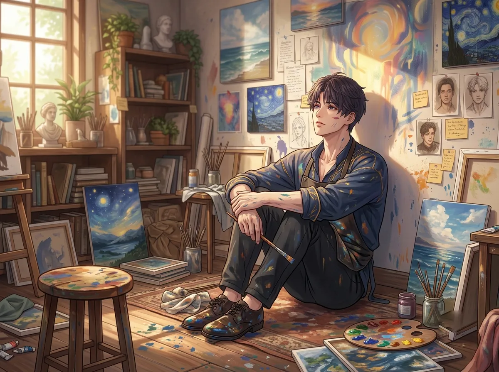
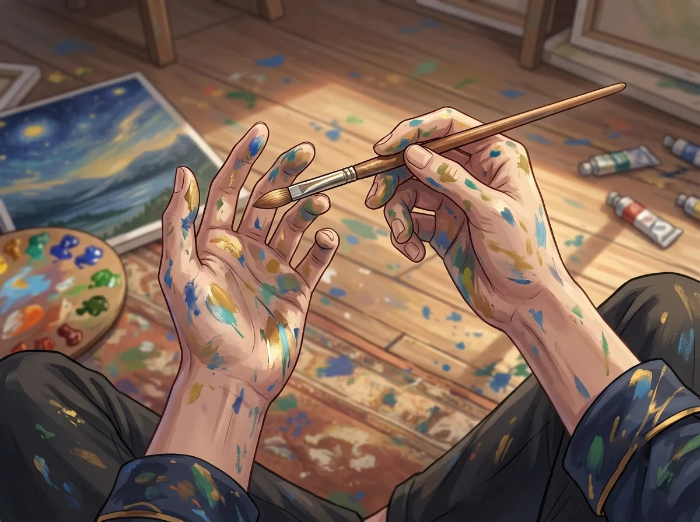
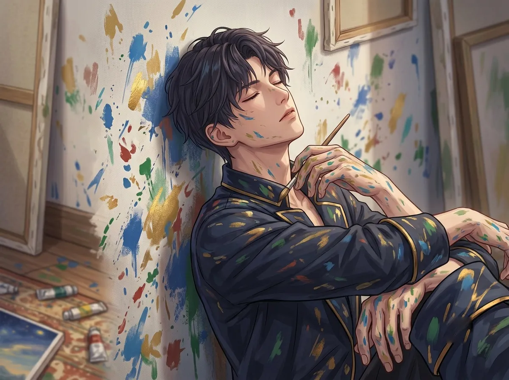
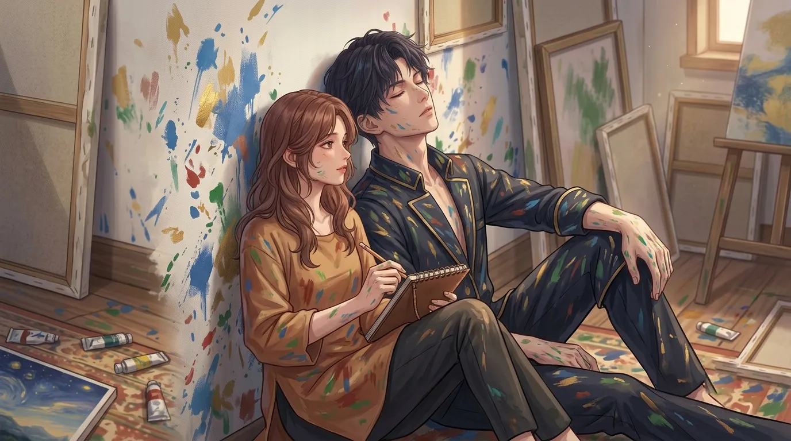
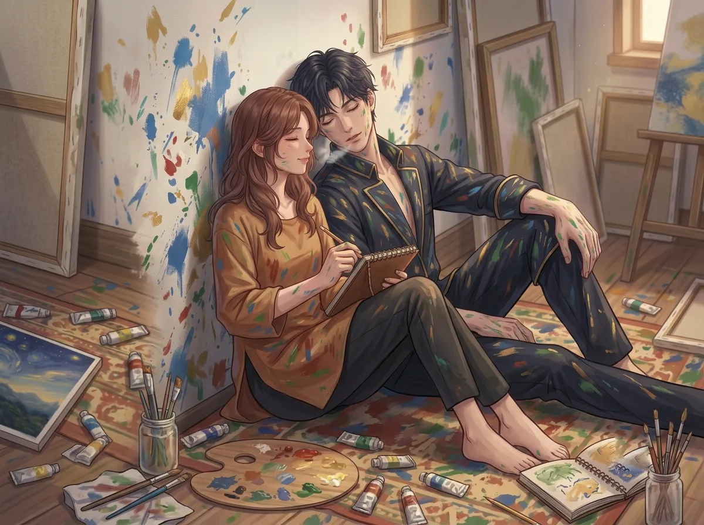

Not the chair. Not the sofa. The floor. Against the wall. Brush still in hand.
There is a spot on the floor of his studio. Not marked. Not chosen. Just... found.
It's against the wall. Not the wall with the window. The other one. The one that faces nothing. The one that doesn't distract.
He sits there sometimes. Not on the chair. Not on the sofa. On the floor.
His back is against the wall. His knees are drawn up. His brush is still in his hand. His eyes are closed. Or open. Or looking at nothing.
He doesn't know why he sits there. He doesn't know why the floor feels right when nothing else does. He only knows that it's the only place where he doesn't have to be anyone.
This is the story of that spot.

He sits on the floor. He doesn't know why he sits on the floor. He could sit on the chair. He could sit on the sofa. He could sit on anything. There are many things to sit on in his studio.
He sits on the floor.
His back is against the wall. The wall is cold. He doesn't mind. The floor is hard. He doesn't care. He sits there. He stays there. He doesn't move.
He doesn't know why the floor feels right. He doesn't know why the floor feels like the only place where he can breathe. He only knows that it does.
The floor doesn't expect anything from him. The floor doesn't need him to be an artist. The floor doesn't need him to be a prince. The floor doesn't need him to be anyone. The floor just holds him.
He sits on the floor because the floor is the lowest place he can be. He can't go any lower. He can't fall any further. The floor is the bottom. The floor is the end. The floor is the place where he can stop pretending.
He doesn't know why he needs to be at the bottom. He doesn't know why he needs to be as low as possible. He only knows that sitting on the floor makes him feel like he doesn't have to be anything.
The floor asks nothing of him. The floor just exists. The floor lets him exist too.

He sits on the floor. He holds the brush. He doesn't paint. He just holds it.
The brush is still in his hand. It's always still in his hand. Even when he's not painting. Even when he's just sitting. Even when he's just breathing. The brush is there. In his hand. Like it's the only thing keeping him together.
He doesn't know why he holds the brush. He doesn't know why he can't put it down. He doesn't know why the brush feels like the only thing that's real.
Maybe because the brush is the only thing he has left from the person he used to be. The only thing that still connects him to the artist. The only thing that still connects him to the prince. The only thing that still connects him to anything.
He holds the brush. He sits on the floor. He doesn't paint. He just holds it. And he breathes.
He doesn't paint when he sits on the floor. He doesn't know why. He just knows that he can't paint. He can't create. He can't make anything new. He can only hold the brush and breathe.
The brush is not a tool. The brush is a tether. The brush is the only thing that still connects him to the person he used to be. The brush is the only thing that still connects him to the world.
He holds the brush. He sits on the floor. He breathes. That is enough. That is all he can do. That is all he needs to do.

He leans against the wall. The wall is cold. The wall is solid. The wall is the only thing that holds him up.
The wall has seen everything. The wall has seen him paint. The wall has seen him cry. The wall has seen him sleep. The wall has seen him sit on the floor and hold the brush and do nothing.
The wall doesn't judge. The wall doesn't ask. The wall doesn't expect anything from him. The wall just holds him up. The wall just stays. The wall just is.
He doesn't know why he needs the wall. He doesn't know why he needs something solid behind him. He only knows that he does. He only knows that without the wall, he would fall. Without the wall, he would be nothing.
He sits against the wall because the wall holds him up. The wall gives him something to lean on. The wall gives him something to be.
The wall has seen everything. The wall has seen his worst moments. The wall has seen his weakest moments. The wall has seen his most honest moments. The wall doesn't judge. The wall just stays.
He doesn't know what he would do without the wall. He doesn't know what he would do without something solid behind him. He only knows that he needs it. He only knows that the wall is the only thing that doesn't leave.

One day, she found him.
He was sitting on the floor. Against the wall. Brush in his hand. Eyes closed. Breathing.
She walked into the studio. She saw him. She didn't say anything. She didn't ask why he was on the floor. She didn't ask why he was holding a brush. She didn't ask if he was okay.
She just sat down. Next to him. On the floor. Against the same wall.
He opened his eyes. He looked at her. She looked at him. Neither of them said anything.
She didn't ask. She didn't expect anything. She didn't need him to be the artist. She didn't need him to be the prince. She didn't need him to be anyone.
She just sat there. Next to him. On the floor. Against the wall. In the silence.
She didn't ask. She didn't say anything. She didn't need him to be anything. She just sat down. Next to him. On the floor. Against the wall.
He didn't know what to do with that. He didn't know what to do with someone who sat on the floor with him. He didn't know what to do with someone who didn't ask questions. He didn't know what to do with someone who just stayed.
She stayed. She didn't ask. That was the gift. That was the answer to the question he didn't know how to ask.

The floor used to hold one person. Now it holds two.
He sits in his spot. Against the wall. Brush in his hand. She sits next to him. In the same spot. Against the same wall. In the same silence.
He doesn't know why she stays. He doesn't know why she doesn't leave. He doesn't know why she sits on the floor with him when she could sit anywhere else.
But she stays. She stays on the floor. She stays next to him. She stays in the silence.
He doesn't know what to do with that. He doesn't know what to do with someone who stays. He doesn't know what to do with someone who doesn't need him to be anything.
He holds the brush. He sits on the floor. She is next to him. The floor holds both of them.
The floor was his. It was the only place he had. It was the only place where he didn't have to be anyone. It was the only place where he could just exist.
She changed that. She changed the floor. She changed the way he saw it. She changed the way he felt when he was on it.
The floor is not his anymore. The floor is theirs. The floor is the place where he learned that he doesn't have to be alone. The floor is the place where he learned that he can share the silence.
He still sits on the floor. He still sits against the wall. He still holds the brush. But he is not the same person who used to sit there. He is someone who has been seen. Someone who has been shared. Someone who has been changed.
The floor used to hold one person. Now it holds two. He didn't know it could do that.
Rafayel sits on the floor. He sits against the wall. He holds the brush. He doesn't paint. He just sits. He just breathes. He just exists.
The floor is the only place where he doesn't have to be anyone. The floor is the only place where he can just be.
He thought the floor was his. He thought the floor was the only place he had. He thought the floor was the only place where he knew how to be.
Then she sat down next to him. She didn't ask why. She didn't ask what he was doing. She didn't ask if he was okay. She just sat down. On the floor. Next to him.
The floor is not his anymore. The floor is theirs. The floor is the place where he learned that he doesn't have to be alone. The floor is the place where he learned that silence can be shared.
He still sits on the floor. He still sits against the wall. He still holds the brush.
But now, she sits there too. In the same spot. Against the same wall. In the same silence.
The floor used to hold one person. Now it holds two. He didn't know it could do that. He didn't know he could be that person. He didn't know he could be someone who didn't have to be alone.